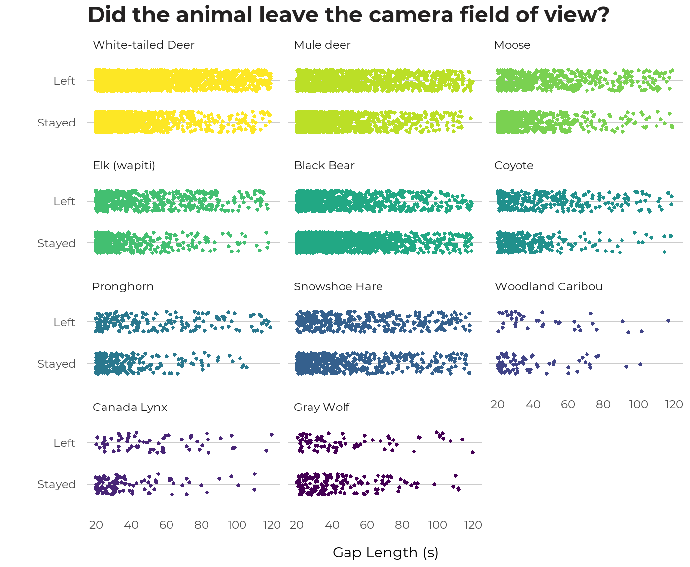

From a pilot study, we determined that if there is a gap of less than 20 seconds between images of the same species at a camera, the animal is almost always still in the view (no evidence of it walking out and returning). Missing the odd time when it leaves the view for less than 20 seconds has little effect on estimates of the total time it is in the field-of-view. At the other end, if there is a gap of >120 seconds between images of the same species, this almost always represented animals leaving and then returning (i.e., the animal is seen walking out of the field-of-view, then walking back in). Gaps of 20-120 seconds are uncertain. These relatively long periods when the animal could be in the field-of-view or not are important when estimating the total durations animals are in the field-of-view, and thus density.
For the 2015 ABMI images, we checked each 20-120 second gap in series’ of native mammals for evidence of the animal leaving and returning. For 2016 and 2017 ABMI images, we checked 20-120 second gaps only for less common species where we had low sample size from 2015. We looked at several images on either side of gaps of 20-120 seconds. In each sequence, the animal was designated as having left the field-of-view during the 20-120 second gap if there was clear evidence of it walking out of the field-of-view and then returning (or a different individual entering the field-of-view). If the animal stayed in one location within the field-of-view, or sequential images showed the animal in disconnected places (as often happens with smaller animals), the animal was assumed to have stayed.
From df_series we filter for images that were flagged as requiring a gap check (gap_check) and had the gaps between images manually classified in 2015 (or later years for some species or studies). Three gap classifications are possible1:
- L - the animal was in the process of leaving the camera field of view (‘left’);
- P - the animal stayed in the field of view (‘present’);
- U - ‘uncertain’ whether the animal stayed or left.
We then create a new variable, left, which indicates whether the animal stayed (gap_class = P) or left (gap_class = L or U).
We can visualize this data in Figure, which displays the same common species seen before. In general, observations where the animal stayed in the field of view are more closely clustered around the 20 second mark, and observations where the animal left the field of view are more evenly spread across the range of gap lengths.

We used this data to develop models of the probability of a species leaving the field-of-view during a 20-120 second gap as a function of the gap duration. Smoothing splines were fit to the probability of leaving as a function of gap length, using a logit-linked binomial model. This was done separately for each species with enough examined gaps (Figure 7). In this interactive graphic, the user can double-click on any species in the legend to view its probabilistic curve in isolation.
Probability that an animal leaves the field-of-view, based on clear evidence from the images, for gaps between images of 20-120 seconds.
After examining the resulting curves, species were grouped into 6 “gap groups”: all ungulates except moose, moose, bears, cougars and canids, all other carnivores (mostly mustelids), and all other mammals (small species). Gap probability models were built for each of these groups in this next step, and the results from these models are used in the calculation of total time in front of the camera.
Across all species, there is a 27% chance that the species left when the gap was only 20 seconds long. That implies that they may also have left in slightly shorter gaps, where we assume they all stayed. However, it makes little difference to the total duration to miss a few shorter gaps where the animals left (i.e., to add that extra little bit of time in), especially because we add time to the start and end of a series (next section). At the other end, there was evidence that animals left in about 70% of the 120 second gaps. Snowshoe hares, porcupines and black bears lowered that average. The first two are small mammals that trigger the camera erratically, making it hard to figure out which way they are moving, so that they generally don’t present definitive evidence of leaving the field-of-view and returning. Bears, and wolves to a lesser extent, often lie/loll around, mainly at lured deployments, and could go for relatively long periods without triggering the camera. Missing long periods when bears are present but not moving would lead to underestimates of their densities. For trend estimates and habitat modeling, we would have to assume that the prevalence of those misses does not change over time or by habitat type. The other species had higher leaving rates for long gaps, so that we are probably not too inaccurate to assume that they left during any gap greater than 120 seconds.
Ideally, each gap between images would be checked to see if the animal left or not. However, the process of checking each gap is time-consuming. When we have direct information on gap-leaving, we define a series as any set of images separated by less than 120 seconds, unless the animal was observed to leave the field-of-view (in gaps of 20-120 seconds that were checked) (illustrated in @ref(fig:gap-illustration)). If it did leave in a gap, then the series ends at the preceding image, and a new series starts when the animal (or a different individual) returns in the subsequent image. The species is in the field-of-view from the first to the last image in the field-of-view (plus end buffers; next sub-section).
When we haven’t examined 20-120 second gaps, a series is all images separated by <120 seconds. However, we then use the above models of gap-leaving probabilities to prorate the 20-120 second gaps for the probability that the species left for a gap of that length. Instead of the full 20-120 second gap length, we only add the duration of the gap x (1 – probability of leaving) to the total series length (illustrated in @ref(fig:gap-illustration), bottom). For example, if there were 4 images separated by 10 seconds, 5 seconds, 60 seconds and 10 seconds, and the model for that species showed a 40% chance that it left in a gap of 60 seconds, then the total time in the field-of-view for that series is 10 + 5 + 60 x (1 - 0.4) + 10 = 61 seconds. (And, if there were an average of 1.25 individuals in those 4 images, the total animal-seconds would be 1.25 x 61 = 76.25 animal-seconds).
Finally, we must consider the time before the first image and after the last image of a series, and time to allocate to single-image series’. We estimate that by calculating the average time between images in all series, separately by species (Table 1). This is typically 4-7 seconds for larger species and somewhat longer for small species. This time is added to the duration of each series, including to single-image series, which would otherwise have a duration of 0 seconds (striped sections in @ref(fig:gap-illustration). The assumption is that the animal is in the field-of-view for half the average inter-photo time before the first image, and after the last image. (Although animals often appear to be further into the field-of-view when the first image is taken, and nearer the edge when the final one is taken, presumably reflecting a lag-time in the motion-detector – the assumption is that this averages to the average interval within series). When we have 20-120 second gaps that are using the probabilistic gap-leaving model, we add this extra time on the start and end of the whole series in the normal way, and we also added this time multiplied by the probability of leaving for each 20-120 second gap, to account for the cases where the animal would have left the field-of-view in those 20-120 second gaps and hence created another series (bottom of @ref(fig:gap-illustration)).

Illustration of how sequential individual images are converted to series, and how the species’ total time in the field-of-view is calculated for each series, when we have directly examined gaps of 20-120 seconds (top) or not examined them and used probabilistic model instead (bottom).
Previous: Overview
There is a fourth gap class, ‘N’, which is added to flag cases where a None image follows a native mammal image.↩